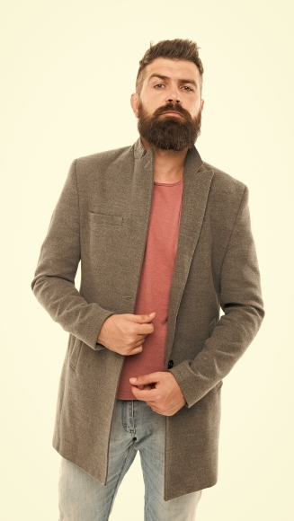
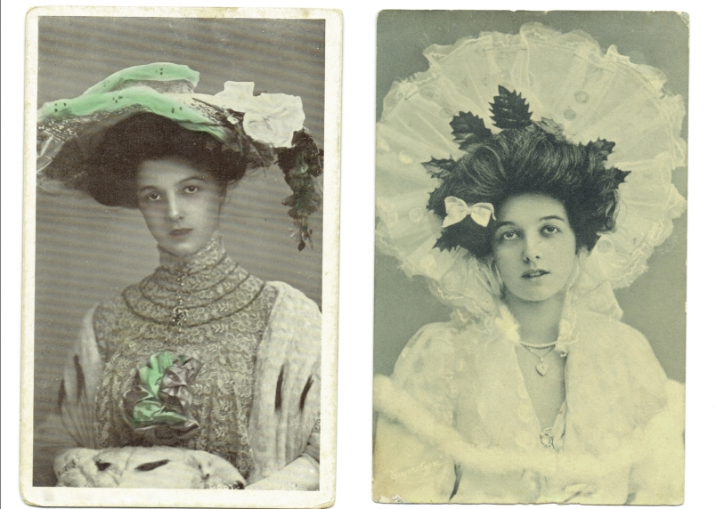
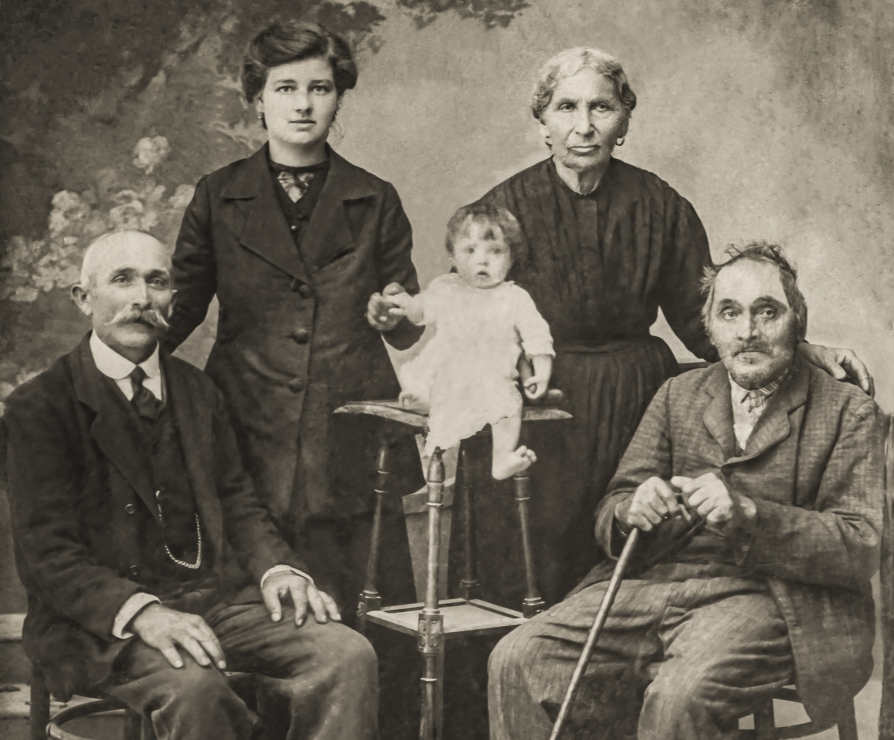

Конструкции урока:
| ID | Construction | Illustration |
|---|---|---|
| 759 | в заключение Cl | В заключение я хочу поблагодарить всех сотрудников нашей фирмы. |
| 1957 | Итак, Cl | Итак, мы вкратце рассказали об особенностях двух культур. |
| 1894 | XP/Cl, XP/Cl и так далее/и т. д. | Кто-то займётся спортом, кто-то будет слушать музыку, кто-то танцевать и так далее. |
| 1895 | NP, NP и тому подобное/и т. п. | Здесь продаются разные справочники, журналы, книги и тому подобное. |
| 839 | в частности, XP/Cl | Они занимались ремонтом техники, в частности холодильников. |
| 2349 | скажем, XP/Cl | Вариантов предлагается множество. Скажем, японская модель образования. |
VP = verb phrase (глагол)
Cl = clause, sentence (предложение)
XP = phrase, sentence (фраза)
NP = noun phrase (существительное)
Русский конструктикон содержит информацию обо всех конструкциях урока https://constructicon.github.io/russian/
Профессор: Итак, мы с вами обсудили женскую моду начала XX века. В заключение хочу
добавить, что в этой время обувь также становится очень важна. Её делают из разных
материалов: кожи, шёлка, атласа и так далее. Модные в это время туфли, сапожки и тому
подобное вызывают восхищение.
Юля: Простите, а можно задать вопрос?
Профессор: Да, конечно!
Юля: Мы сейчас говорим об обуви, которую носили аристократы. А в чём ходили простые
люди? Скажем, рабочие.
Профессор: Это отличный вопрос! Простые люди, в частности рабочие и городские
жители, обычно носили грубые туфли и сапоги из кожи. Этим людям нужно было много
ходить, поэтому они выбирали удобную обувь на небольшом каблуке.
Образец:
В заключение хочу добавить, что эта награда — результат отличной работы всех наших
сотрудников.
В заключение, мы продолжим радовать вас нашими платьями.
| В заключение | хочу добавить, что | теперь мы будем производить ещё и обувь! |
| хочется подчеркнуть, что | эта награда очень важна для нашего бренда. | |
| мне бы хотелось сказать, что | мы продолжим радовать вас нашими платьями. | |
| можно сказать, что | эта награда — результат отличной работы всех наших сотрудников. | |
| важно упомянуть, что | наш бренд молодой и эта награда — только начало большого пути. | |
| , мы гордимся этой наградой и благодарим всех за поддержку нашего бренда! | ||
Образец:
Итак, в этом сезоне люди будут носить блузки ярких цветов. Например, красные.
Итак, в этом сезоне будут в моде блузки ярких цветов. Например, красные.
Итак, в этом сезоне будет модно носить блузки ярких цветов. Например, красные.
 |
|  |  |
| 1. Оля часто покупает себе новую обувь: | а. купить стильные джинсы, трендовые кроссовки, несколько универсальных футболок… | и так далее. и тому подобное. |
| 2. Мой отец любит яркую одежду: | б. туфли, сапоги, босоножки, кеды… | |
| 3. Сергей хочет обновить свой гардероб: | в. шляпа, солнечные очки, стильное платье, шёлковый шарф на шее… | |
| 4. Настя одевается как кинозвезда: | г. у него есть синие ботинки, зелёные носки, красный галстук, рубашки в клетку, футболка с цветочками… |
| в частности, XP/Cl Они занимались ремонтом техники, в частности холодильников. English ‘They worked with equipment repair, in particular refrigerators.’ Norwegian ‘... for eksempel / spesifikt ...’ |
скажем, XP/Cl Вариантов предлагается множество. Скажем, японская модель образования. English ‘There can be many options. Let’s take for example the Japanese model of education.’ Norwegian ‘... for eksempel / la oss si ...’ |
Обе конструкции вводят пояснение некоторого общего утверждения с помощью
конкретного частного примера. В качестве примера описывается целая ситуация или
называется её элемент. |
|
| Конструкция в частности, XP/Cl часто подчёркивает принадлежность приведённого примера к некоторому множеству. | Конструкция скажем, XP/Cl часто вводит пример как гипотетически возможный. |
| Both constructions introduce an explanation of a general assertion by presenting a specific concrete example. The example usually describes an entire situation or names one of its elements. | |
| This construction в частности, Cl/XP emphasizes the fact that the given example belongs to a certain set. | The construction скажем, Cl/XP often presents an example as hypothetically possible. |
| Begge konstruksjoner introduserer en nærmere forklaring på en generell påstand ved hjelp av et konkret, spesifikt eksempel. Eksempelet beskriver som regel en hel situasjon eller nevner et element av den. | |
| Konstruksjonen в частности, Cl/XP fremhever det anførte eksempelets tilhørighet til en gitt mengde. | Konstruksjonen скажем, Cl/XP presenterer ofte eksempelet som noe hypotetisk mulig. |
Образец:
На деловую встречу лучше надеть что-то строгое,скажем, рубашку и брюки.
| на вечеринку на деловую встречу на пляж в спортзал на природу/в поход в пустыню в лес зимой в музей в офис на улицу в дождь в театр на ужин с друзьями |
лучше надеть что-то | необычное удобное строгое тёплое прохладное яркое солидное непромокаемое красивое лёгкое комфортное обычное повседневное праздничное дорогое практичное |
скажем, | галстук шарф юбка пиждак свитер джинсы шорты брюки дождевик рубашка шуба пальто костюм платье халат блузка плащ футболка пижама спортивный костюм тёмные очки перчатки варежки шапка шляпа кепка бейсболка |
| 1. Представители многих профессий должны носить форму, | а. В частности, стюардессам запрещено иметь татуировки и делать яркий маникюр. |
| 2. Ограничения на внешний вид могут касаться не только одежды, но и тела человека. | б. В частности, лучше избегать () массивных кроссовок или ярких шнурков. |
| 3. Деловой стиль одежды часто требуется на официальных мероприятиях, | в. в частности, пилоты и машинисты поездов. |
| 4. Современный деловой образ допускает спортивную обувь, но действовать нужно аккуратно. | г. в частности, на престижных конференциях или серьёзных деловых встречах. |
| 5. Шик может быть выражен аксессуарами, | д. в частности, дорогим галстуком, часами или очками. |
Образец:
Красивая одежда не обязательно дорогая.
—> Красивая одежда не обязательно дорогая. В частности, можно покупать вещи с рук
(например, на finn.no).
Образец:
В одежде я консервативный. Скажем,, я никогда не ношу рубашку без галстука.
Не вся одежда подходит для работы в офисе. 1 , если юрист придёт на
работу в шортах, его начальник будет, скорее всего, недоволен. Уместные* в офисе вещи
— это одежда делового стиля, 2 , брюки, рубашки, пиджаки, туфли 3
. В школах России дети тоже носят одежду делового стиля, и это
называется «форма»: бордовый пиджак с белой рубашкой, чёрные брюки с жилеткой,
строгий синий сарафан и так далее. Носить форму неприятно: каждый день ходишь в
одной и той же скучной одежде. Считается, что так дети будут меньше отвлекаться от
учёбы и не будут судить друг друга «по одёжке»*. 4 , одежда делового
стиля — это скучно, но необходимо.
*уместные — English: appropriate; Norwegian:
* судить «по одёжке» — English: first impressions count; judge someone by their clothes;
Norwegian: dømme noen etter utseendet
Образец:
В одежде я консервативный. Скажем, я никогда не ношу рубашку без галстука.
1950-е годы
|
1920-е годы
|
|  | 1900-е годы
|
|  | начало 1900-х годов
|
Цветотип — это цветовой тип внешности, он есть у каждого. Считается, что существует четыре цветотипа: весна, лето, осень и зима (1 , у каждого времени года есть ещё более подробная классификация: 2 , цветотип весна может быть тёплым, ярким или светлым). Определить ваше «время года» можно по цвету волос, кожи, глаз, губ 3 . 4 , цветотип помогает понять, какой цвет одежды больше подойдёт человеку. 5 , людям с рыжими волосами обычно идёт одежда тёплых оттенков, а людям с чёрными волосами лучше носить вещи ярких цветов.
imgОбразец:
Кристина, 25 лет
Совет стилиста:
Цветотип Кристины — лето: у неё голубые глаза холодного оттенка и светлые волосы.
Кристине подойдут неяркие холодные цвета, в частности, сиреневый, голубой,
бирюзовый и так далее. Скажем, она будет прекрасно выглядеть в голубой рубашке,
светлых джинсах, синем пальто и бежевых ботинках. Также ей подойдёт пастельно-
розовая толстовка, светло-серый свитер, бежевая куртка и тому подобное. Итак, мы
собрали для Кристины новый гардероб.
1. Инна, 29 лет |
2. Олег, 29 лет |
3. Костя, 31 год |
Люба: собеседование, помощник юриста
Вика: экскурсия по храмам Москвы
Миша: поход в горы
Захар: свадьба подруги, свидетель